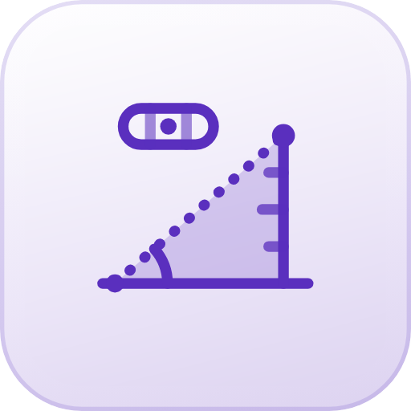

Höhe, Wasserwaage, Neigung und Gewitter-Peiler – mit Kamera, Mikrofon und Lagesensor. 100% lokal.
Baum, Haus, Mast oder Turm: Du peilst mit dem Fadenkreuz der Kamera an, MessWahr rechnet aus Neigung und Entfernung die Höhe aus. Das Kamerabild wird nur live angezeigt, nie gespeichert.
Du peilst zuerst den Fuß des Objekts an (wo es den Boden berührt), dann die Spitze. Der Boden sollte dazwischen ungefähr eben sein.
Leg das Smartphone flach auf eine Fläche oder stell es auf eine Kante. Die Ansicht wechselt von selbst.
„Kalibrieren" gleicht kleine Fehler des Sensors aus: Du misst einmal, drehst das Smartphone auf derselben Stelle um 180° und misst noch einmal – der Mittelwert ist der echte Nullpunkt. Hüllen mit Kamerabuckel kippen das Gerät; leg es für genaue Werte ohne Hülle oder auf die Kante.
Leg das Smartphone auf die geneigte Fläche (Rampe, Dach, Tisch) oder stell es mit der langen Kante auf eine Schräge (Geländer, Treppe).
Noch genauer: Unter „Waage“ einmal kalibrieren – der Nullpunkt gilt auch hier.
Orientierungswerte ohne Gewähr. Für Bauabnahmen und Vermessung gelten die einschlägigen Regeln und geeichte Messgeräte.
Mikrofon und Lagesensor werden nur live ausgewertet. Es wird nichts aufgenommen, gespeichert oder übertragen. Alle Werte sind Schätzungen zur Orientierung und keine Unwetterwarnung; eine berechnete Ankunftszeit kann deutlich abweichen, Gewitter können sich schnell neu bilden oder die Richtung ändern. Peile nur von einem geschützten Ort aus, etwa im Haus am Fenster oder im Auto. Bei Gewitter gilt: früh in ein festes Gebäude oder ins Auto, amtliche Unwetterwarnungen beachten.
MessWahr nutzt den Lagesensor deines Smartphones. Er ist auf etwa ein halbes bis ein Grad genau; dazu kommen dein Zielen und die angenommene Kamerahöhe. Die Werte sind eine gute Orientierung, aber keine Vermessung und kein Ersatz für ein geeichtes Messgerät.
Teil der WahrZentrale